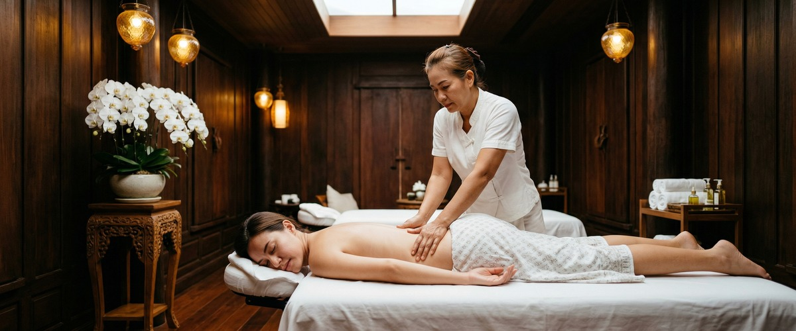
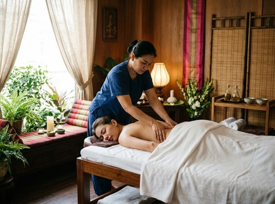

If your shoulders feel locked up by the end of the day, your jaw is tight, or you find yourself unable to unwind properly even when you have the time, stress and tension are likely at the root of it.

These are not minor issues. Ongoing stress affects your muscles, your sleep, your mood, and your long-term health.
Thai massage for stress and tension relief works on the physical symptoms that build up in the body. It also calms the nervous system that keeps driving them.
Stress is the body's response to pressure or perceived threat. Psychological stress affects nearly every system in the body. It triggers the fight-or-flight response: cortisol and adrenaline are released, heart rate climbs, and muscles contract.

When that pressure never fully passes, the muscles stay contracted. The result is chronic tension, especially across the neck, upper back, and shoulders.
NHS guidance on stress confirms that prolonged stress hormones cause real physical symptoms. These include muscle pain, fatigue, poor sleep, and headaches.
Many people carry this load without linking it to stress at all. They notice a stiff neck or low energy and assume something structural is wrong. In reality, their nervous system is stuck in a heightened state.
Massage works on stress in two ways: physical and neurological. On the physical side, targeted pressure and assisted stretching release tight muscle tissue, improve circulation, and ease localised pain.
On the neurological side, massage activates the parasympathetic nervous system — the part of your body responsible for rest and recovery. This is what creates the clear drop in tension you feel during and after a session.
Research backs this up. A study in the International Journal of Neuroscience found measurable reductions in cortisol and heart rate after a single massage. A separate trial found that traditional Thai massage reduced cortisol levels and heart rate in people under stress.
At Thai Massage Greenock, treatments for stress and tension include Traditional Thai Massage, Thai Oil Massage, and Thai Aromatherapy Massage. Each one can be tailored to your needs. You can book your session online to get started.
Every session with Jariya begins with a short conversation about where you are holding tension. Stress does not always show itself clearly.
Jariya reads the body directly — where muscles are guarded, where movement is restricted, and where the nervous system is holding on. There are no scripts here.
For stress and tension relief, sessions typically focus on the upper back, neck, shoulders, and scalp. These are the areas where the body stores stress most visibly.
Traditional Thai Massage works through precise acupressure and slow assisted stretches that restore movement to compressed joints. If you prefer a more deeply relaxing approach, Thai Oil Massage or Thai Aromatherapy Massage can cover the same areas with a softer, flowing technique.
Most clients leave noticeably calmer and more mobile than when they arrived. Book a treatment at Thai Massage Greenock to experience the difference a single session makes.
Anyone carrying a sustained mental or physical load benefits. This includes office workers at a screen for eight or more hours a day, parents managing young children and broken sleep, and shift workers whose bodies never fully reset.
It also includes people going through periods of high anxiety or life change, and anyone who wakes up tired despite getting enough sleep. If your tension is showing up as headaches, jaw clenching, or a persistent ache between the shoulder blades, booking a session in Greenock or Inverclyde is one of the most direct things you can do about it.
It does both, and the two are connected. Research on PubMed shows measurable drops in cortisol levels and heart rate after massage therapy. These are physical changes, not just a pleasant hour. The calming effect on the nervous system carries on after the session, especially with regular treatment.
Traditional Thai Massage is highly effective for releasing the muscle tension that stress causes. It uses acupressure and assisted stretching to free up contracted tissue. Thai Oil Massage and Thai Aromatherapy Massage offer a more deeply calming approach. These work well for people whose stress shows up mainly as fatigue and mental overload. Jariya will advise on the best option when you arrive.
Most people notice a clear drop in muscle tension and mental noise within the session itself. The calming effect on the nervous system tends to deepen for an hour or two afterwards. For those carrying long-term stress, the effects build with regular sessions as the body learns to hold less tension between treatments.
For ongoing stress management, a session every two to four weeks works well for most people. This is often enough to stop tension building back to a crisis point, and still easy to maintain. Jariya keeps notes between sessions and adapts treatment as your needs change over time.
Yes. Stress headaches are often caused by tight muscles across the upper back, neck, and scalp. Massage works directly on this tissue, reducing the tension that triggers or sustains the headache. Thai Facial Massage targets the jaw, temples, and head. It can be especially helpful for people who clench or grind as a stress response.
Absolutely. Massage works well alongside exercise, counselling, breathwork, and medication where prescribed. It addresses the physical side of stress — tight muscles, raised heart rate, and poor sleep — that other approaches may not target directly. Always let Jariya know of any medical conditions at the start of your session.